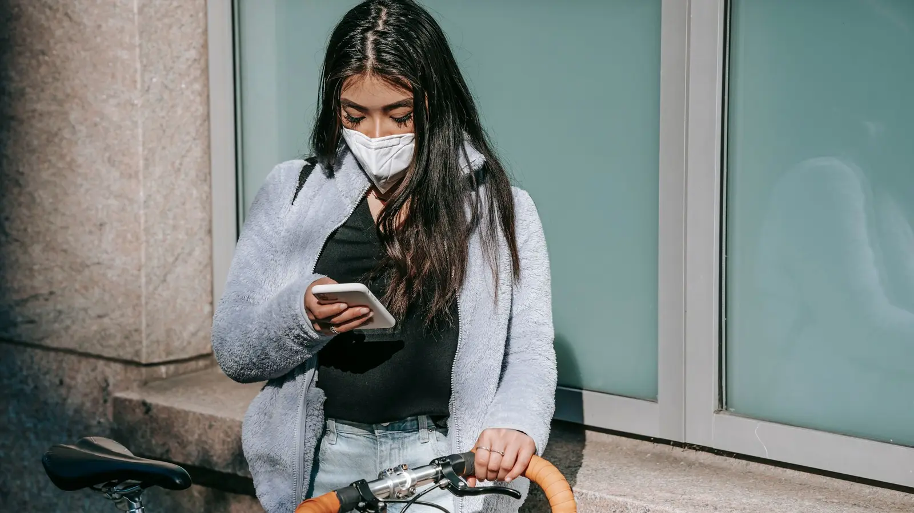
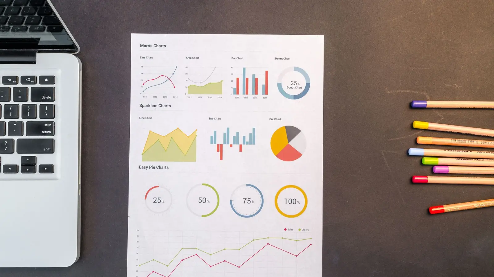

핵심 콘텐츠
메디힘의 프로젝트와 운영 과정에서 축적한 프레임워크를 공개 가능한 범위에서 정리합니다.

외국인환자 문의가 늘었는데 매출은 그대로인 이유
문의 수를 유효상담·예약·내원·매출로 연결해 실제 성과를 판단합니다.
콘텐츠 읽기 →
국가별 상담 리드타임을 관리하는 방법
국가별 환자는 결정을 내리는 속도와 필요한 정보가 다릅니다. 상담 단계와 시간을 함께 관리하는 방법입니다.
콘텐츠 읽기 →
해외환자 유치의 Unit Economics
매출이 늘어도 손해일 수 있습니다. 환자 1명 단위의 공헌이익과 회수기간으로 유치사업을 판단하는 방법입니다.
콘텐츠 읽기 →